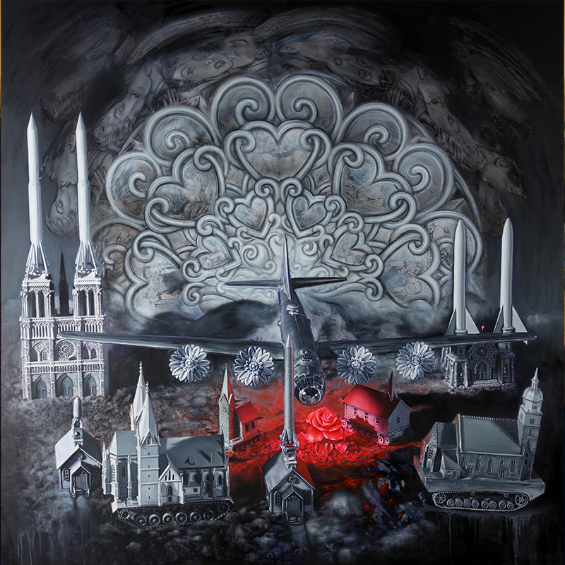
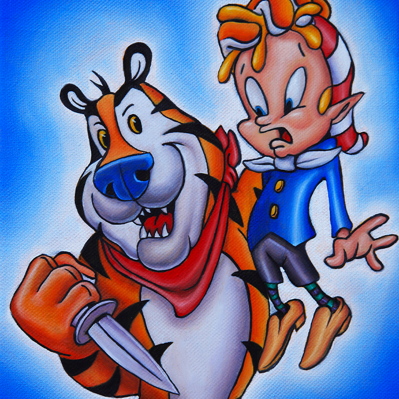
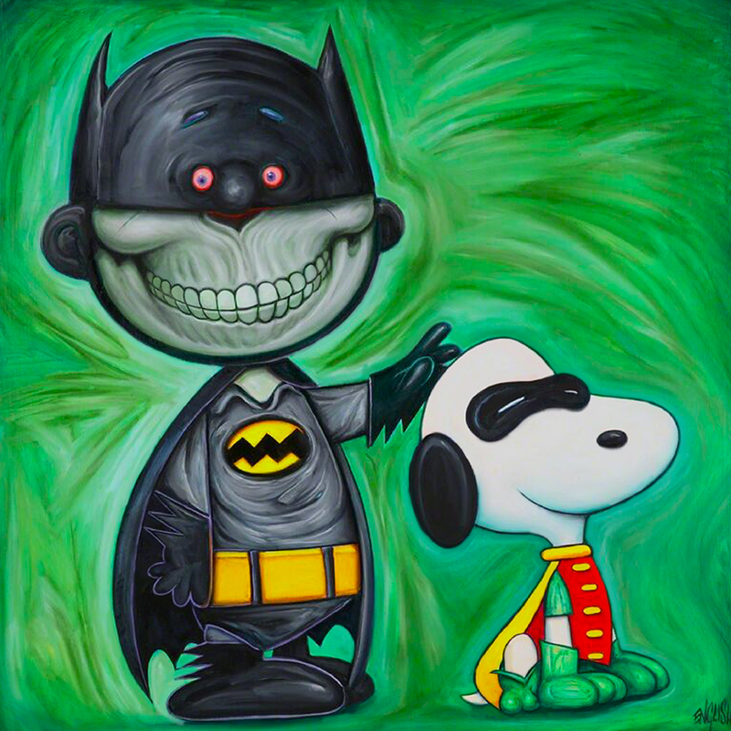

2010
2011

2012

2013

2014

2015

2016
2017

2018

A chronological index of documented paintings and works on paper currently attributed to the 2010s.
This page provides entry points to year-level catalogues for works presently documented within the decade. Years and records reflect the best available documentation at the time of publication, and entries may be added, revised, or reassigned as additional primary sources and verified records emerge.


